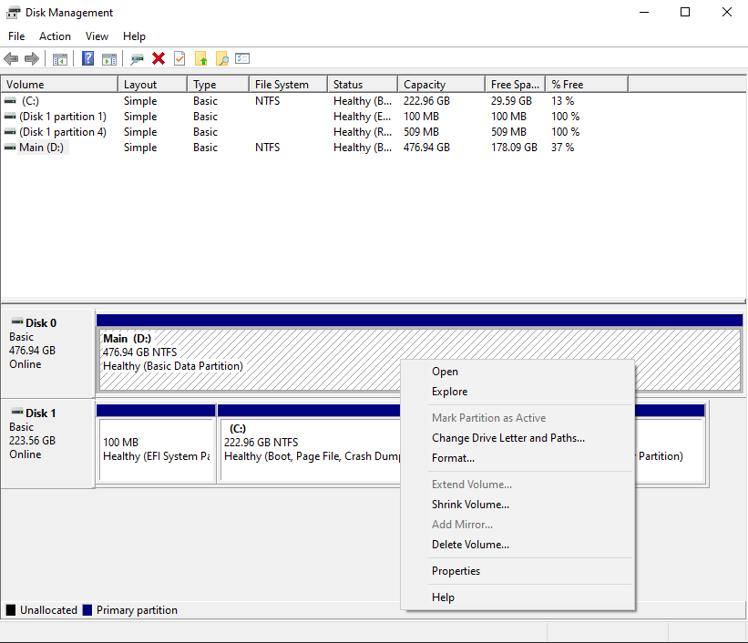
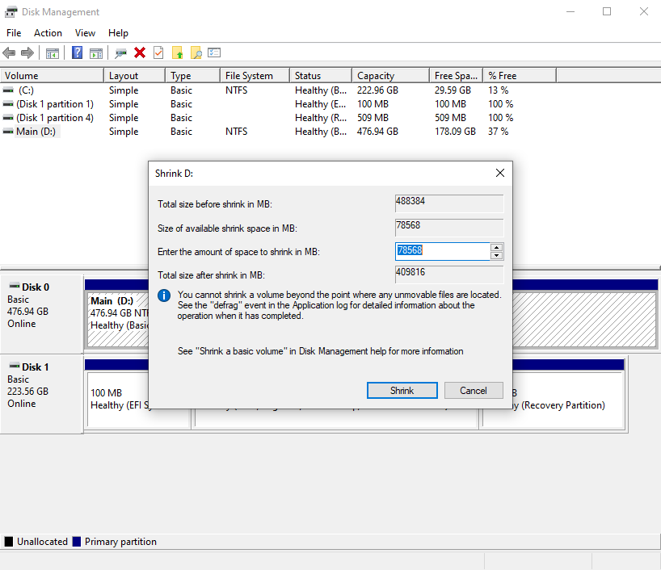
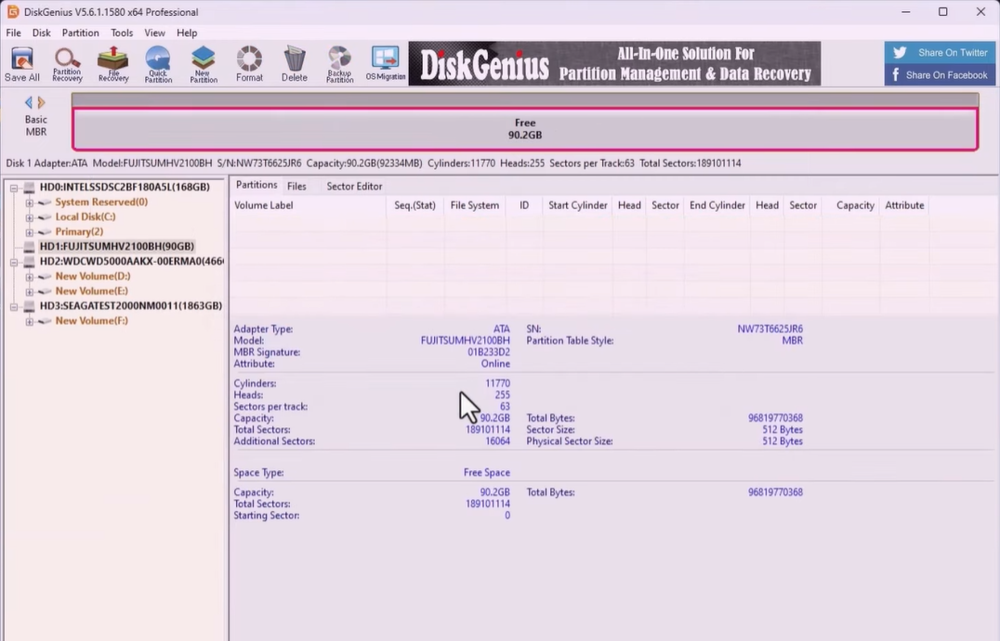
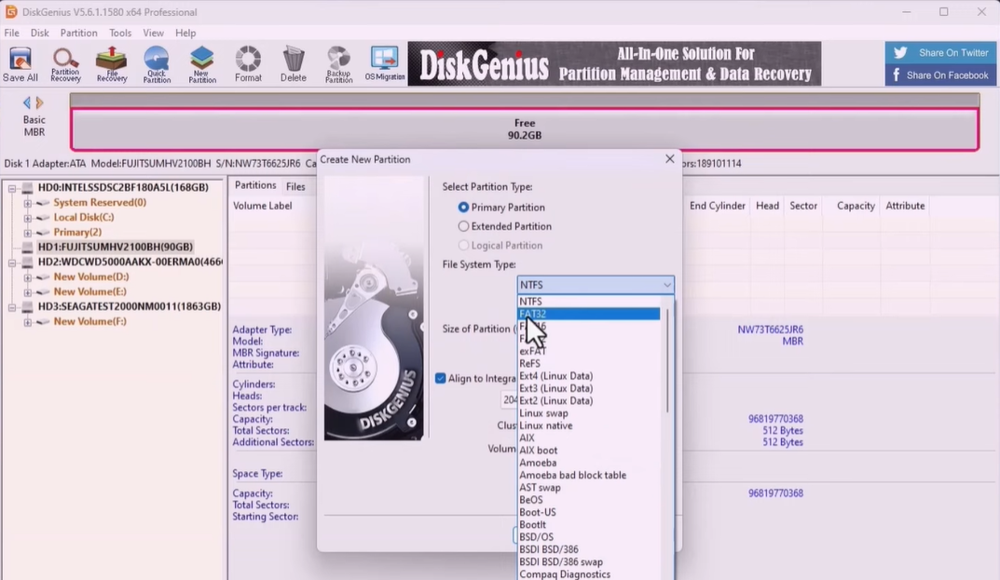
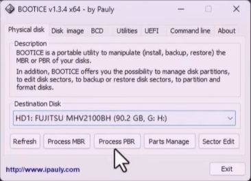
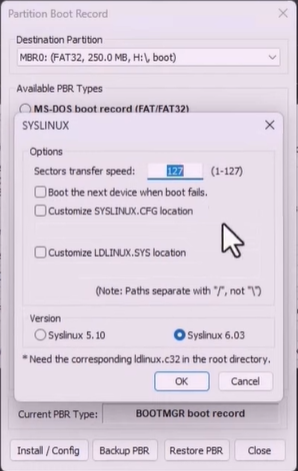

Making the internal drive
Windows Guide
Proceed with caution
The steps detailed here perform partitioning to your internal disks. If you're performing these steps on your main drive where your operating system resides, PLEASE PROCEED WITH CAUTION as one wrong move can break your boot media for your operating system.
Making the internal drive will require the following tools:
- Disk Management for making the empty partition
- DiskGenius for making and writing partitions
- BootICE64 for writing boot partition
- Boot files from the Android TV ISO image to copy towards the boot partition
- The 32GB Storage zip file where our system's storage file will be applied.
Steps
Creating the boot partition and files
- Open Disk Management by hitting the windows key on your keyboard and type 'Disk Management' and select the first option that says
Create and format hard drive partitions. This will open up the Disk Management Window and select the drive you want to partition off. -
Secondly, we are going to create a 64GB partition. I will showcase the steps using my internal NVME drive for better clarity.
-
Right click on your internal drive and select
Shrink volumeand a wizard will open.

In the wizard, you'll see this subsection Enter the amount of space to shrink in MB. Beside to that section, you'll see pre-allocated numbers. Delete that, and add the following number 65536
Tip
We added 65536because we used MB to GB conversion rate, which is 1024MB x 64 (as in the GB)

-
After that, select
Shrinkand wait for the drive to be shrinked. you will see that we have an unallocated space. -
After the creation of the unallocated drive, open DiskGenius and select the drive we made the unallocated space for, and find the unallocated partition (64GB) (In my case, we have 90GB for demonstration purposes)

- From here, right click on the free space, and select
Create New Partitionand a wizard will open.
` You will need to select File System Type as FAT32 as we are making the boot partition, then change the Partition Size Unit from GB to MB, then in the same field, add 250. This should report as 250 >> MB

- Now set the Volume label to
bootand clickOK. This will create a 250MB Partition that has our boot files for booting into Android TV. -
Next, we need to set the main partition where our storage file lives. Return back to the free space, right click on the free space, and select
Create New Partitionand a wizard will open. -
Same steps apply, except we are fully allocating our remaining space (approx 63GB) and formatting as exFAT and naming the Volume Label to
system. Then clickOK. -
Next, go ahead and verify that you have made the correct partitions for the correct drive. After, go ahead to the top left corner and hit
Save alland clickYesto confirm your choice. This will start making the partitions and assign the boot and system label. -
You can check your File Explorer to see the partitions and verify them.
Creating the boot files for the boot volume
- Now we use BootICE64 to make the required boot volume for booting into the Android TV Bootloader.
- Open the
BootICE64.exeafter extracting it from the.rarfile. Make sure to Run As Administrator - Once the window opens, select your destination drive of which we made the partitions, click
Process PBR.

- After that,, another wizard will open, select
Syslinuxand make sure the Destination Partition is the 250MB partition we made. - Another window will open, so we will click
Ok

-
A message should pop-up saying
Successfully Changed the PBR. We finished making the boot partition. -
Now go ahead and mount the ISO file image you downloaded, and Ctrl+A and Ctrl+C to select all files and copy them to our clipboard. Paste all the files to the boot partition we made by Ctrl+V.
-
Next, go ahead and delete the
bootandefifolder in the boot partititon. We don't need them since the partition is assigned as boot already. -
Next, go ahead and cut the
system.sfsfile in our boot partition towards the exFAT partition we made in the same drive and paste it there. Then copy over the 32GB Storage Image file in the same exFAT partition we made. -
Voila, we made an internal installation of the Android TV. The process is lengthy and abit complex, that's why we recommend you use a Flash Drive or an external harddisk to perform the process.
-
Then, boot from the drive by going into your BIOS Boot Selection and select the Android TV boot file from the Boot Menu. If a Security Violation error pops up, confirm Secure Boot is disabled.
How to boot from the internal drive
You can tap the F12 key while booting to select your boot device. When you reach the boot device selection screen, you can use the arrow keys to select the device, and hit Enter to boot.
If your Android TV boot file isn't showing up, while you are on the boot device selection screen, try restarting the system and going back to the boot menu. If it fails yet, Start Again
(Varies by manufacturer, refer to your PC's specifications on how to enter the boot menu)
See the subsections for a laptop or desktop PC below.
If you have a laptop
Since a laptop has inbuilt display, select the first option that appears and hit 'Enter'. It will take some time as it's the initial boot. Please be patient and allow a maximum of 5 minutes. If not, Start Again
If you have a desktop
A desktop will have HDMI/ DP OUT so we will scroll down and see the kernel options that have (External Display) label beside it. Select the first option and wait as it's the initial boot. Please be patient and allow a maximum of 5 minutes. If not, Start Again
After this, you can go over to the next page Initial OOBE Setup for a guide on installing and configuring the apps and multimedia services, or head over to Maintenance & System to learn how to update and keep your system optimal.